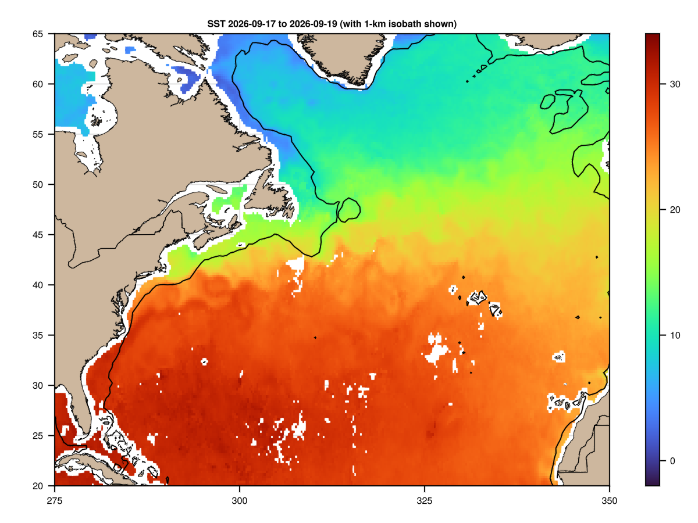
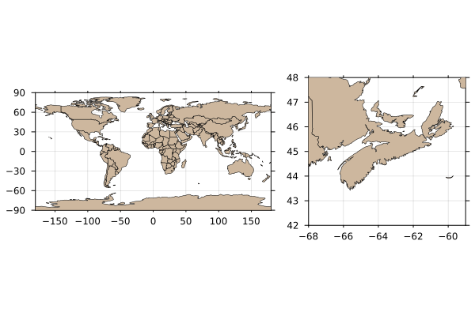
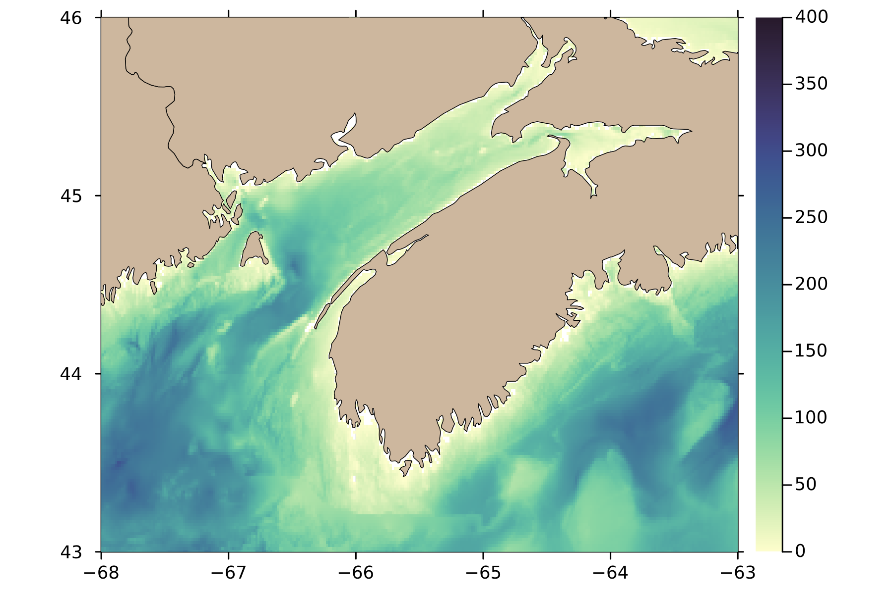
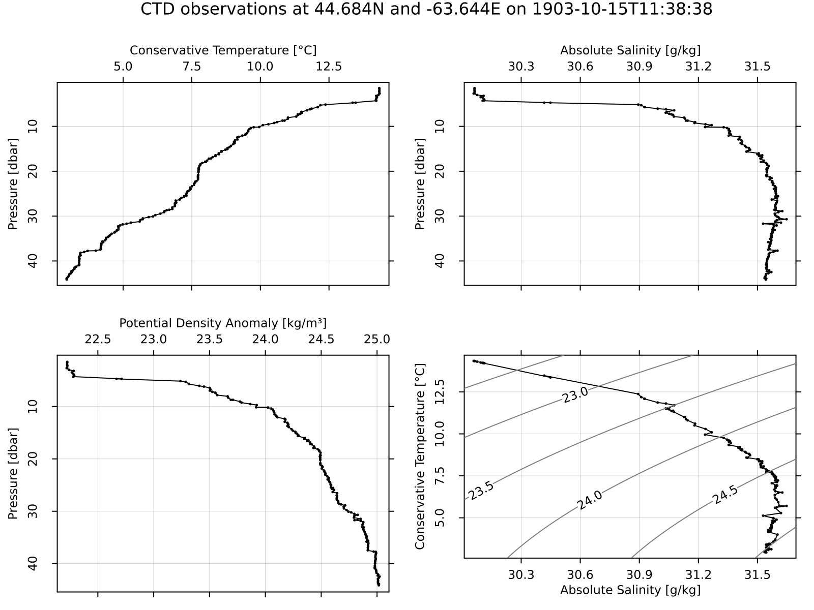
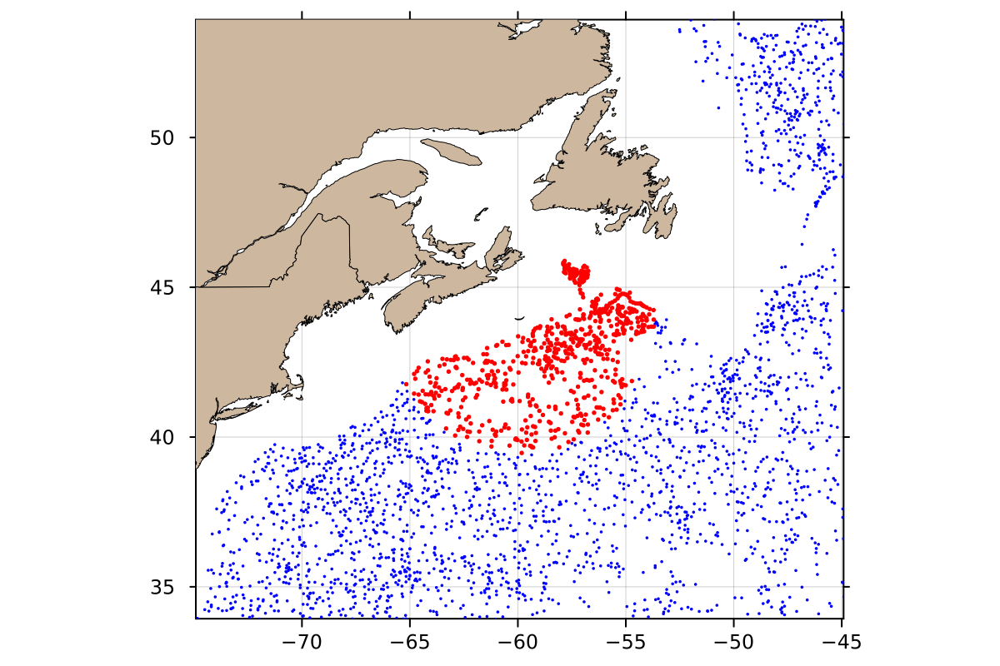
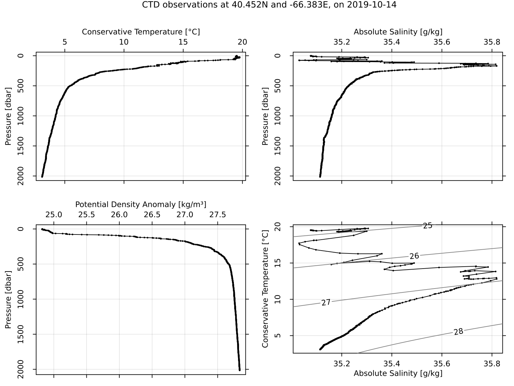

Examples
AMSR satellites
These store several data streams, including sea-surface temperature, which may be plotted as follows.
using OceanAnalysis, Plots
f = "~/data/amsr/RSS_AMSR2_ocean_L3_3day_2025-09-07_v08.2.nc"
d = read_amsr(f, "SST");
longitude = d.metadata["longitude"];
latitude = d.metadata["latitude"];
SST = d.data
heatmap(longitude, latitude, SST, framestyle=:box, aspect_ratio=:equal,
xlims=(0, 360), ylims=(-90, 90), dpi=300, size=(800, 400),
title=f * ": SST", titlefontsize=9)
# savefig("amsr.png")
Coastlines
The following shows how to plot a whole-earth view, for which the coarse-scale built-in coastline dataset is suitable, along with a Nova Scotia view, for which the fine-scale dataset is preferable.
# Plot world coastline earth with the coarse dataset and Nova Scotia with the fine dataset
using OceanAnalysis, Plots
# Left: world view
p1 = plot_coastline(coastline(:global_coarse))
# Right: Nova Scotia view
p2 = plot_coastline(coastline(:global_fine), xlims=(-68, -59), ylims=(42, 48))
l = @layout [a{0.6w} b{0.4w}]
plot(p1, p2, layout=l)
# savefig("maps.png")
Topography
The following downloads topographic data in the region of the Bay of Fundy, and plots an image of water depth.
# Bay of Fundy at approximately 1.6km resolution
using OceanAnalysis, Plots, TiffImages
topo_file = get_topography_file(-68, -63, 43, 46, resolution=1)
topo = read_topography(topo_file);
water_depth = -topo.data; # depth is the negative of height
water_depth[water_depth .< 0.0] .= NaN; # trim land
heatmap(topo.metadata["longitude"], topo.metadata["latitude"], water_depth,
aspect_ratio=1.0/cos(44.5*pi/180.),
framestyle=:box, dpi=300,
xlims=extrema(topo.metadata["longitude"]),
ylims=extrema(topo.metadata["latitude"]),
color=:deep, clim=(0, 500))
cl = coastline();
plot!(cl.data.longitude, cl.data.latitude, color=:black, legend=false, linewidth=0.5)
#savefig("topography.png")
CTD profile diagnostic plot
The following shows how to read a built-in CTD file, and plot some hydrographic diagrams.
# %% Read a built-in CTD file
using OceanAnalysis, Plots, Measures, Dates
filename = joinpath(dirname(dirname(pathof(OceanAnalysis))),
"data", "ctd.cnv")
ctd = read_ctd_cnv(filename)
# %% Plot some diagrams that are often useful in analysis
p1 = plot_profile(ctd, which="CT")
p2 = plot_profile(ctd, which="SA")
p3 = plot_profile(ctd, which="sigma0")
p4 = plot_TS(ctd)
title = "Argo observations at " *
"$(round(ctd.metadata["latitude"],digits=3))N and " *
"$(round(ctd.metadata["longitude"],digits=3))E" *
" on $(Dates.format(ctd.metadata["time"], "yyyy-mm-dd"))"
plot(p1, p2, p3, p4, layout=(2, 2), size=(800, 600), margin=0.25cm,
dpi=200, plot_title=title, plot_titlefontsize=11)
# savefig("ctd_diagram.png")
Argo subset and map
The following shows how to map Argo profile locations made within 500 km of Sable Island, within the past 365 days.
# %% Get the index
using OceanAnalysis, CSV, Dates, DataFrames, Plots
index_file = get_argo_index("~/data/argo")
index = read_argo_index(index_file) # 3.2e6 profiles
# %% Select profiles made within the past 365 days
today = now(UTC)
start = today - Dates.Year(1)
index_recent = index[start.<index.time.<today, :] # 1.7e4 profiles
# %% Isolate profiles made within 500 km of Sable Island
SI_lon = -59.915
SI_lat = 43.934
distance = map(i -> geod_distance(SI_lon, SI_lat,
index_recent.longitude[i], index_recent.latitude[i]),
1:nrow(index_recent))
index_near = index_recent[distance.<500, :]
# %% Plot results on a ap
scatter(index_recent.longitude, index_recent.latitude,
xlims=SI_lon .+ (-15, 15),
ylims=SI_lat .+ (-10, 10),
aspect_ratio=1.0 / cos(SI_lat * pi / 180.0),
markersize=1, markerstrokecolor=:blue, color=:blue,
framestyle=:box, dpi=200, legend=false)
scatter!(index_near.longitude, index_near.latitude, markersize=1.5,
markerstrokecolor=:red, color=:red)
# %% add a coastline for reference
plot_coastline!(coastline(:global_fine))
# savefig("argo_map.png")
Argo profile diagnostic plot
The following shows how to display some useful diagnostic plots for a single Argo profile.
# %% Read a built-in Argo file, and plot some hydrographic diagrams
using OceanAnalysis, Plots, Measures, Dates
filename = joinpath(dirname(dirname(pathof(OceanAnalysis))), "data",
"D4902911_095.nc")
a = read_argo(filename)
# %% Plot an overview of hydrographic properties
p1 = plot_profile(a, which="CT")
p2 = plot_profile(a, which="SA")
p3 = plot_profile(a, which="sigma0")
p4 = plot_TS(a)
title = "CTD observations at " *
"$(round(a.metadata["latitude"],digits=3))N and " *
"$(round(a.metadata["longitude"],digits=3))E" *
" on $(Dates.format(a.metadata["time"], "yyyy-mm-dd"))"
plot(p1, p2, p3, p4, layout=(2, 2), size=(800, 600), margin=0.25cm,
dpi=200, plot_title=title, plot_titlefontsize=11)
# savefig("argo_profile.png")